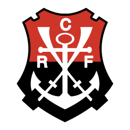

Clube de Regatas do Flamengo
Raça, Amor e Paixão


O Clube de Regatas do Flamengo foi fundado em 17 de novembro de 1895, inicialmente como um clube de remo,
com o
objetivo de competir nas águas da Baía de Guanabara. A entrada do futebol no clube ocorreu em 1912, após
um
grupo de dissidentes do Fluminense decidir se juntar ao Flamengo, iniciando uma nova era para o clube. O
Flamengo, conhecido como o "Mais Querido" e "Mengão", é um dos clubes de futebol mais populares e
vitoriosos
do
Brasil, com uma rica história e inúmeros títulos.
Fundação e Primeiros Anos
O Flamengo foi fundado por um grupo de jovens do bairro do Flamengo, no Rio de Janeiro, com o objetivo de
praticar remo.
As cores originais do clube eram azul e amarelo, mas foram alteradas para preto e vermelho em 1896,
devido a
problemas com tecidos importados e desbotamento.
O clube passou a se chamar Clube de Regatas do Flamengo em 1902, e em 1912, o futebol foi introduzido.
A equipe de futebol foi criada após uma cisão no Fluminense, onde dissidentes decidiram se juntar ao
Flamengo,
expandindo o clube para o futebol.
Em 1912, o Flamengo conquistou seu primeiro Campeonato Carioca, marcando o início de uma trajetória de
sucesso
no futebol.
O clube se tornou uma força no futebol brasileiro, conquistando inúmeros títulos estaduais, nacionais e
internacionais.
O Flamengo revelou e abrigou grandes jogadores ao longo de sua história, como Zico, Júnior, Leonidas da
Silva,
entre outros.
A torcida do Flamengo, conhecida como "Nação Rubro-Negra", é uma das maiores e mais apaixonadas do
Brasil,
com
milhões de torcedores espalhados por todo o país e no exterior.
O Flamengo é conhecido por sua forte identidade cultural e por representar a paixão do povo carioca e
brasileiro
pelo futebol.
Títulos e Reconhecimentos:
O Flamengo possui um extenso currículo de títulos, incluindo diversos Campeonatos Brasileiros, Copas do
Brasil,
Campeonatos Cariocas e a Copa Libertadores da América, além de títulos internacionais.
O clube também é reconhecido por sua participação em grandes públicos e recordes de torcida nos
estádios.
A história do Flamengo é marcada por momentos de glória, superação e paixão, consolidando sua posição
como
um
dos principais clubes de futebol do mundo.